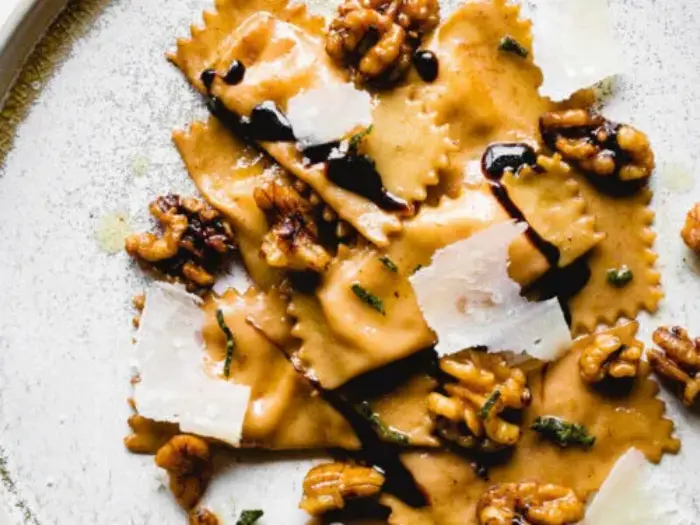

Pumpkin Tortellini

This recipe calls for pumpkin puree and some warm spices. I used cinnamon, allspice, cane syrup, and some grated parmesan cheese for my filling.
A note on making pasta, have fun! It truly is a fun process and relaxing. I used to beat myself up when it didn’t come out right or I did not roll it through the machine with precision and ease. As I continue to make pasta and attempt recipes, the more comfortable I am getting.
Pumpkin tortellini is a mouthwatering pasta dish that combines the richness of pumpkin with the comfort of pasta. It starts with a silky pumpkin filling flavored with warm spices and a touch of sweetness.
| Prep Time | Cook Time | Total Time | Calories | Servings |
|---|---|---|---|---|
| 45 minutes | 15 minutes | 1 Hour | 500kcal | 6 |
- Sauté Pan
- Blender
- Baking sheet
- Straight wheel cutter
- Piping bag or spoon
- Spritz bottle
- Flutter cutter
- Large Pot
- 10 tbsp butter
- 2 cups pumpkin puree
- 1 tbsp olive oil
- 1/4 tsp cinnamon
- 1/4 tsp nutmeg
- 1 tbsp apple cider vinegar
- 1 tbsp cane syrup
- 1 cup parmesan cheese
- 1 pasta dough
- 1/2 cup walnuts chopped
- 1 tbsp fresh minced sage
- for garnish balsamic reduction
- Brown 6 tablespoons of butter in a sauté pan, then blend with pumpkin, spices, vinegar, and cane syrup. Fold in Parmesan and cool.
- Roll out pasta dough and cut into 3-inch strips.
- Pipe filling along each strip, fold dough over, and seal edges.
- Press down and seal around each filling to form individual tortelli.
- Cook tortelli in boiling water for 2-3 minutes, then sauté with butter, walnuts, and sage.
- Serve with grated Parmesan and balsamic reduction.